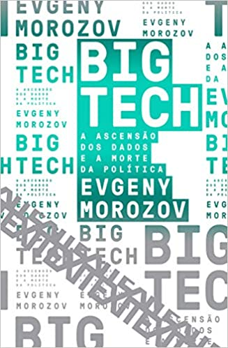

Livros de Tecnologia
Livros
- Futuro Presente: O mundo movido à teconlogia
- Inteligência Artificial, Robótica, Internet das Coisas, Nanotecnologia, Biotecnologia, Veículos Autônomos, Impressão 3D, Realidade Virtual...o mundo está passando, mais uma vez, por mudanças importantes graças aos avanços tecnológicos acumulados ao longo de mulhares de anos.
- Ensino Híbrido: Personalização e Tecnologia na Educação
- Ensino Híbrido: personalização e tecnologia da educação é um livro feito por professores para professores
- Big Tech: A ascensão dos dados e a morte da política
- Reunião dos principais artigos de um dos maiores influentes especialistas em tecnologia e em internet do mundo. Evgeny Morozov. Big tech problematiza a lógica do chamado "solucionismo" tecnológico, que enxerga a tecnologia como panaceia para problemas que instituições falharam em resolver
Futuro Presente: O mundo movido à teconlogia
Edição Português | por Gui Perelmuter | 2 dez 2019
Preço: R$25,00 Comprar
Ensino Híbrido: Personalização e Tecnologia na Educação
Edição Português | por Lilian Bacich, Adolfo Tanze Neto, e outros. | 17 mai 2015
Preço: 45,99 Comprar

Big Tech: a ascensão dos dados e a morte da política
Edição Português | por Evgeny Morozov | 4 dez 2018
Preço: R$ 31,41 Comprar
Inicio